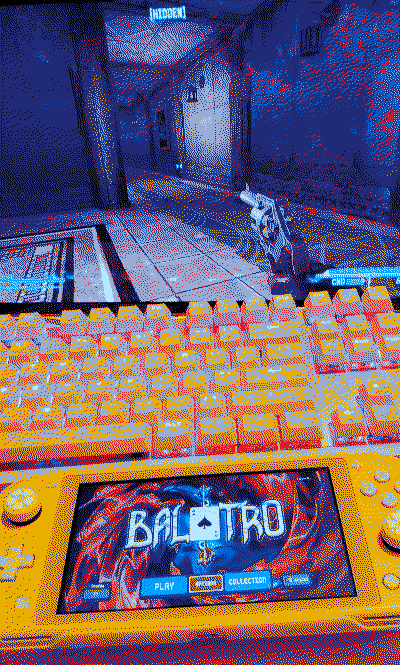

january
started my 2nd year @ uni. i love learning  , hooked on asian glow's 11100011
, hooked on asian glow's 11100011
media

- madoka magica: rebellion | ⟳ | ★★★★★
+
starting off the year with PEAK. - half-life: alyx but the gnome is TOO AWARE | ✔ | ★★★★★
- puella magi madoka magica: wraith arc | □
+
found out there was a madoka manga that takes place between the events of the anime and rebellion (though i am not entirely sure if it's 100% canon...) via this video essay so i decided to give it a read. i feel a little mentally ill about PMMM at the moment. will probably hopefully put it on my reading log with more thoughts once i finish it. - nosferatu | ★★★★☆
- twin peaks: the return | □
this show feels so evil from the first 2 seasons of twin peaks what the fuckkkk.
+
- balatro | ★★★★★
this shit is fucking insane. balatro has always interested me but i thought i was a bit too stupid for the game. i get it now. i've been loving the balatro yuri too.
+
- fallout new vegas: dead money dlc | ✔ | ★★★★☆
- severance (season 1) | ✔ | ★★★★★
+
oh i am having the time of my life. this shit is so good. - severance (season 2) | □
- cat soup | ⟳ | ★★★★★
+
wanted to show my girlfriend this because she has never watched it. she said the little cat is very very evil and does not fuck with him. i fuck with him. - interstellar | ⟳ | ★★★★★
+
got the chance to watch this in theater and in IMAX too.... so freaking good i loved this movie when i first watched it on a roku tv but the theater experience was very nice. love literally transcends time and space. so true. - twilight | ⟳ | ★★★☆☆
+
the entire saga was free on tubi for a bit - twilight: eclipse | ⟳ | ★★★☆☆
+
i accidentally watched this one first before new moon
- twilight: new moon | ⟳ | ★★★☆☆

 also can i just say the coloring in this movie is kinda gorgeous. like the sets feel like a little barbie dollhouse i love how this movie looks.
also can i just say the coloring in this movie is kinda gorgeous. like the sets feel like a little barbie dollhouse i love how this movie looks.